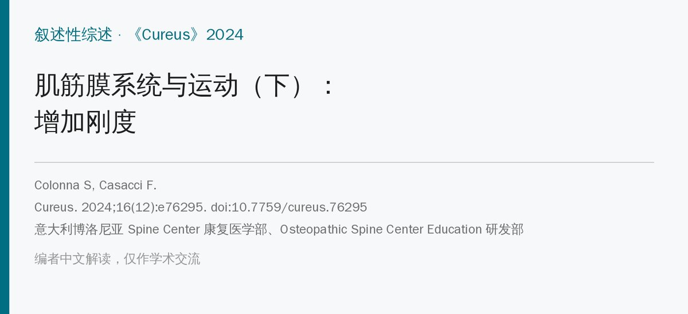
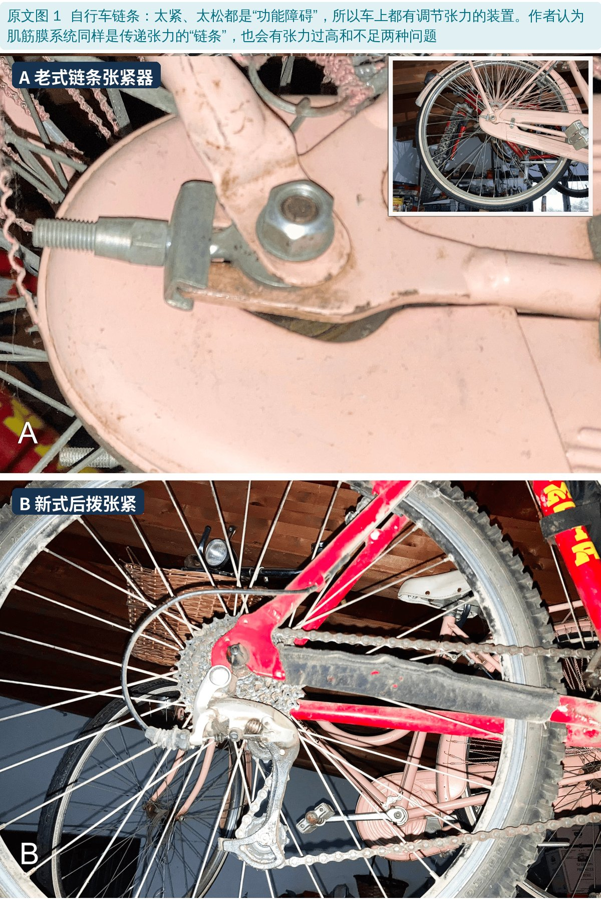
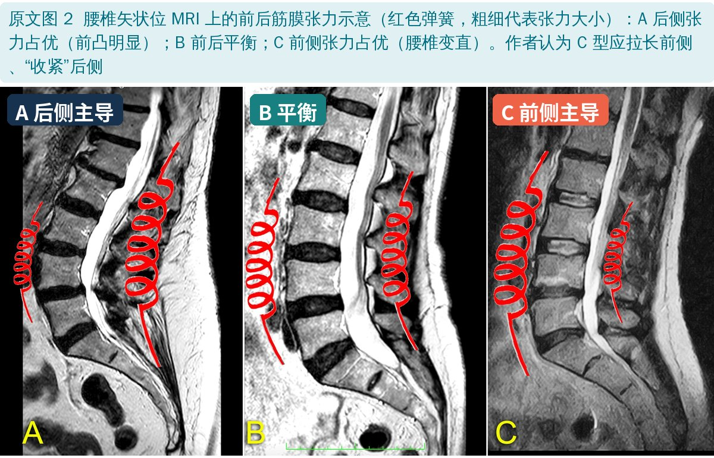
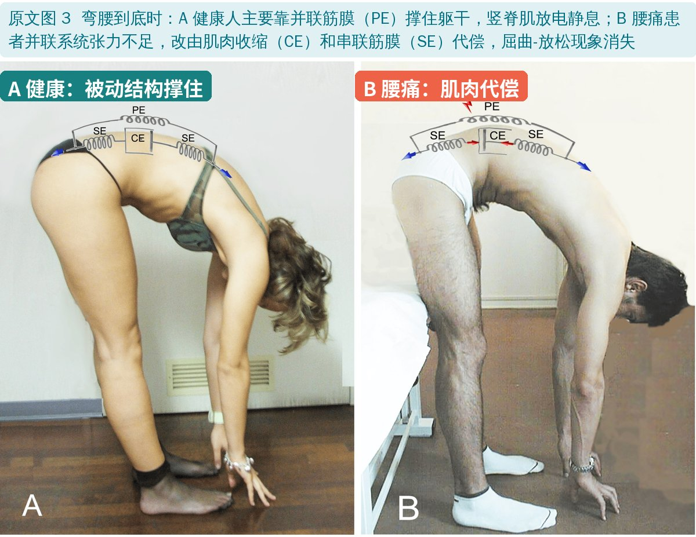
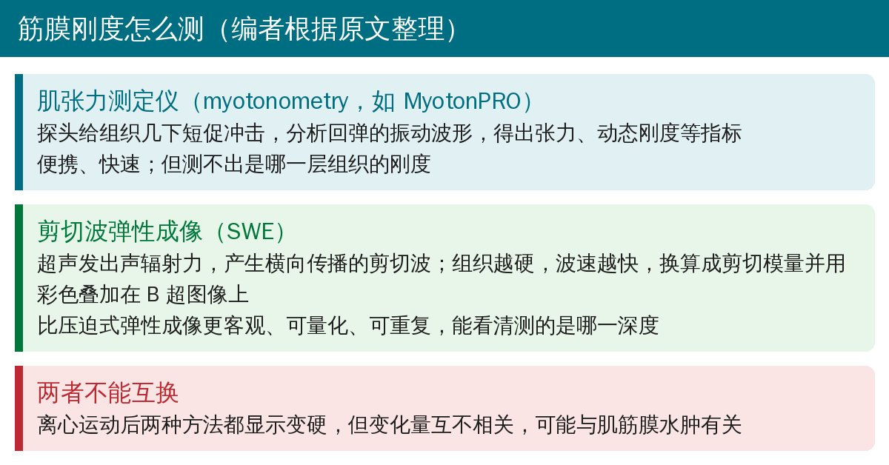
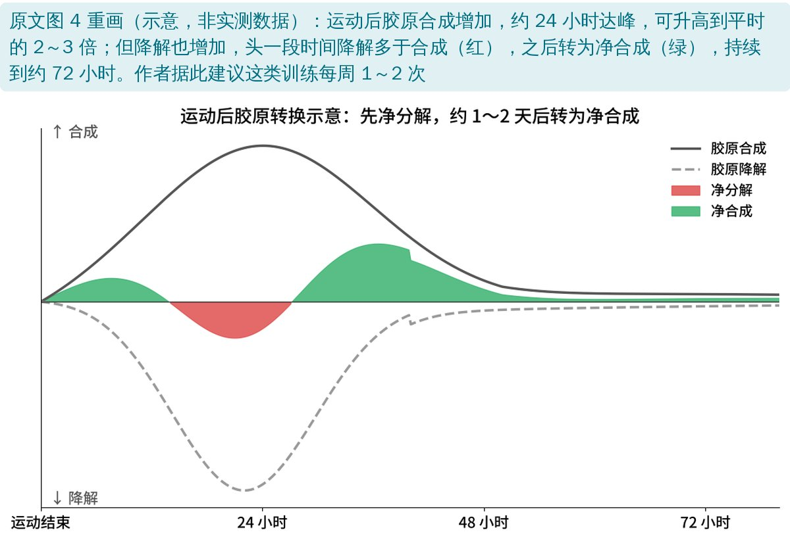
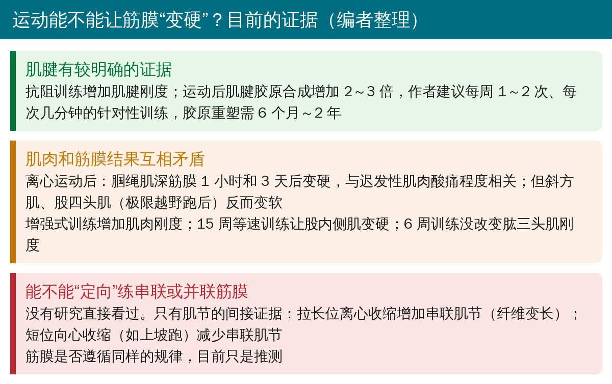

🔖原文信息（编者中文重排）
📚 文献信息
▪ Colonna S, Casacci F. Myofascial System and Physical Exercise: A Narrative Review on Stiffening (Part II). Cureus. 2024;16(12):e76295. doi:10.7759/cureus.76295
▪ 作者单位：意大利博洛尼亚 Spine Center 康复医学部、Osteopathic Spine Center Education 研发部
▪ 文章类型：叙述性综述＋作者假说（两篇系列的下篇；上篇讲拉伸）
筋膜的核心功能是传递张力。无论手法治疗还是拉伸，大家关注的几乎都是“太紧”——整骨里叫“运动屏障”。作者提醒：张力传递还有另一种异常，“太松”。

🔖原文图 1：链条太紧太松都不行
• 就像足弓：肌筋膜张力过高 → 高弓足；张力不足 → 扁平足
• 全身性的松弛：Ehlers-Danlos 综合征、马凡综合征、关节过度活动综合征
• 局部松弛：腹股沟疝、腹壁疝、腰疝；外伤（如踝扭伤后关节囊韧带撕裂）；长期姿势异常（如腰椎前凸变小）
• 作者的疑问：如果很多腰痛治疗都在“松解”，而腰椎不稳又是重要病因，两者如何协调？

🔖原文图 2：腰椎前后筋膜张力的三种模式
例如腰椎变直：整骨里叫“屈曲功能障碍”（伸展受限、屈曲容易，弹压试验阳性）。通常归咎于前侧太紧，但作者认为后侧张力不足也可能是主因，所以治疗要拉长前侧、同时“收紧”后侧。
• 黏弹性：筋膜的变形是非线性的，取决于负荷大小、持续时间和速度；张力变化会立即引起成纤维细胞骨架重组，改变组织刚度
• 人体静息肌筋膜张力（HRMT）：肌电“静默”时仍存在的固有张力，来自肌成纤维细胞和肌节中的肌动-肌球蛋白相互作用，用最少的能量维持姿势稳定
• 筋膜能主动收缩：成纤维细胞和肌成纤维细胞（介于肌细胞和成纤维细胞之间，含 α-平滑肌肌动蛋白）可以像平滑肌一样持续等长收缩；肌成纤维细胞的收缩力约为成纤维细胞的 4 倍，受氧水平、血管活性肽、自主神经、炎症因子和机械张力影响
• 大鼠研究提示，肌成纤维细胞最多的是肌束膜，尤其是张力性肌肉
• 张力异常可能与两类问题相关：刚度过高（斜颈、帕金森僵直、强直性脊柱炎、慢性颈腰痛）；刚度不足（围产期骨盆不稳疼痛、腰椎节段不稳、纤维肌痛）

🔖原文图 3：健康人和腰痛患者弯腰时谁在“撑”
• 健康人站立弯腰到底时，竖脊肌出现肌电静息：躯干重量由韧带、椎间盘和肌肉筋膜的被动成分撑住
• 很多慢性腰痛患者（包括神经根病）这个现象消失，竖脊肌一直在收缩。作者解释：并联的被动筋膜张力不足，由肌肉收缩和串联筋膜代偿
• 这个现象在弯腰坐姿、颈部屈曲中也存在；腘绳肌在弯腰时比竖脊肌更晚“静息”
• Lee 等：健康人竖脊肌 10% 最大收缩就能让脊柱刚度平均增加 11.8%——肌肉收缩确实可以代偿稳定性

🔖两种无创测量方法（编者根据原文整理）

🔖原文图 4 重画：运动后胶原合成与降解
• 运动后胶原合成可增加到 2～3 倍，约 24 小时达峰，升高可持续 70～80 小时；但降解同时增加，运动后 18～36 小时内为净分解，训练水平越高这段时间越短，之后转为净合成
• 作者据此建议：针对性的筋膜训练每周 1～2 次、每次几分钟即可刺激胶原重塑；完整重塑需要 6 个月到 2 年

🔖运动与刚度的证据（编者整理）
• Thomas 等综述：抗阻训练增加肌腱刚度，对肌肉的作用不一致；增强式训练增加肌肉刚度
• 卧床 60 天后腰部椎旁肌静息张力增加，恢复活动（包括跳跃）后同样增加，但组织化学变化不同
• 一项被引用的研究只有 2 名受试者、没有基线数据、没写训练时长，作者自己也指出它价值有限
• 能否“定向”练串联或并联筋膜：只有肌节的间接证据，筋膜是否遵循同样规律仍是推测
• “刚度不足”是值得重视的视角：提醒临床不要只想着“松”，腰椎不稳、关节过度活动、产后骨盆不稳等需要的是稳定和负荷
• 但核心仍是推理：腰椎变直归因于“后侧筋膜张力不足”、屈曲-放松消失归因于“并联筋膜松弛”，都没有直接测量；腰痛患者也可能是因为疼痛、恐惧而保护性收缩
• 关于“运动增加筋膜刚度”的证据很少且矛盾：多数研究测的是肌腱或整块肌肉，单独测筋膜的很少；离心运动后有的变硬、有的变软
• 没有给出具体训练方案，“每周 1～2 次、几分钟”来自肌腱研究的外推
• 作者在致谢中说明使用了 ChatGPT-4 做语言编辑
• 离心训练前后矛盾：一段说离心收缩“促进并联肌节增加”（纤维变粗），后一段又说“离心训练通常增加串联肌节、向心训练增加并联肌节”
• 胶原净分解的时间：图 4 图注说“前 24 小时”净分解，正文说 18～36 小时
• 引用编号错乱：图 4 称改编自 Magnusson 等“[50]”，但 Magnusson 是文献 [65]；Madeleine 等是 [74]，后文说“同一作者的研究”却引用 [54]
• 单位混用：Sihvonen 研究中竖脊肌在“腰椎屈曲约 79°”时静息，腘绳肌在“96.6%”腰椎屈曲时静息，一个用角度、一个用百分比
• 概念错误：说肌成纤维细胞“被称为 α-平滑肌肌动蛋白”——应为“表达 α-平滑肌肌动蛋白”
• 推理跳跃：从“组织在快速受力时变形较小”直接推出“持续低强度牵拉比短时高负荷更伤害筋膜刚度”，缺少依据
• “10% 最大收缩”写成“最大收缩的 10%”的病句；“tensor fascia latae end gluteus maximus”（end 应为 and）；关键词 “miofascial” 拼错
• 评估时同时考虑“太紧”和“太松”：过度活动、反复扭伤、产后骨盆不稳、腰椎变直伴弯腰时竖脊肌持续紧张的患者，可能更需要稳定和负荷训练，而不是更多松解
• 弯腰时看屈曲-放松现象：有表面肌电的可以作为腰痛评估和疗效监测的指标
• 训练频率：以胶原转换为依据，针对结缔组织的负荷训练不必每天做，每周 1～2 次、给足恢复时间
• 测量刚度时，肌张力测定仪和剪切波弹性成像不能互换，前后比较要用同一种方法
欢迎关注骨科康复小黄公众号，获取更多物理治疗的专业知识！
📄参考文献：
Colonna S, Casacci F. Myofascial System and Physical Exercise: A Narrative Review on Stiffening (Part II). Cureus. 2024;16(12):e76295. doi:10.7759/cureus.76295
原文以 CC BY 4.0 协议开放获取，版权归原作者所有。本文为学术交流中文解读：原文图 1～3 引自原文，图中中文标签为编者所加；图 4 由编者根据原文用中文重画（示意图），要点卡为编者整理。仅供学习交流，如有侵权请联系删除。